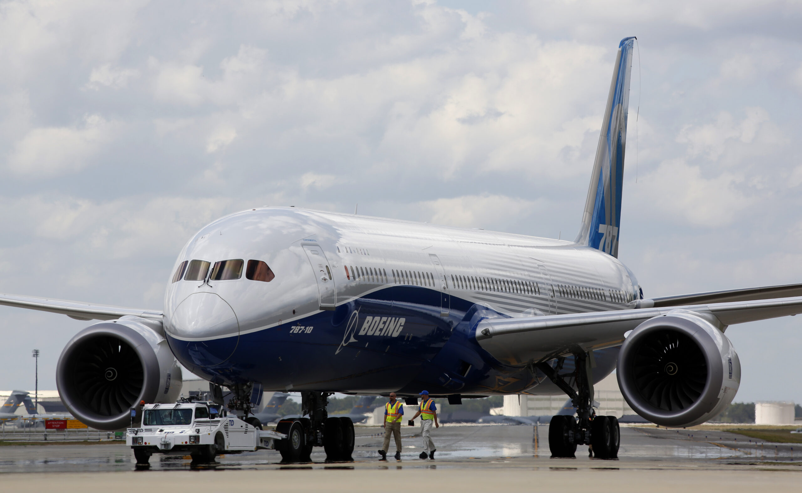
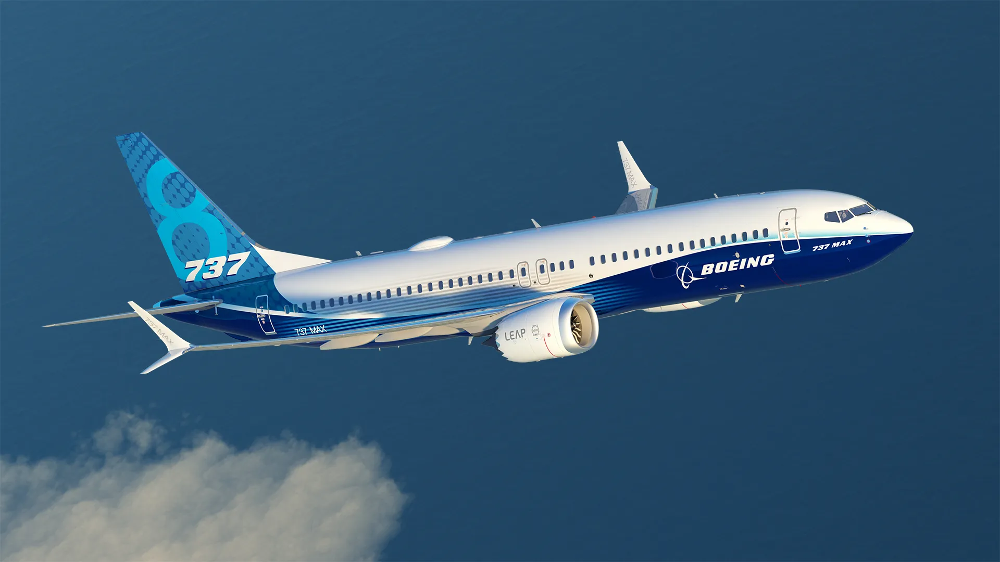
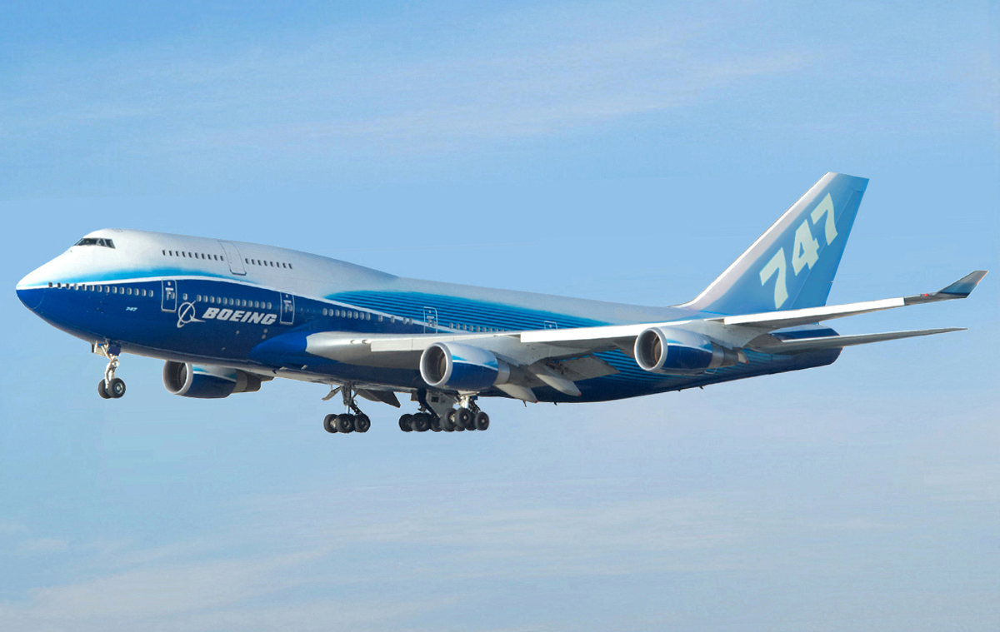
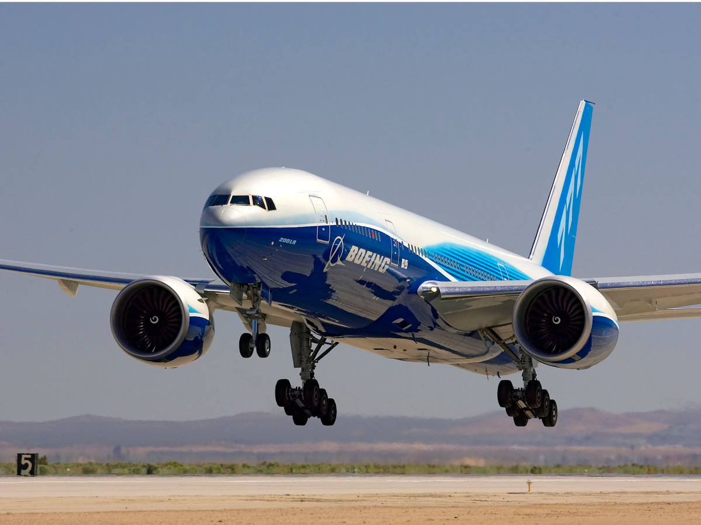

Boeing
Boeing is one of the world's leading aircraft manufacturers. This American based aviation giant, needs no introduction as their plant in the United States has produced some of the most iconic aircraft in history. Their constant head to head competition with French manufacturer, Airbus, has led to so much developments in the industry as the other constantly tries to be better than the other.
Although it has faced quite some controversy concerning the safety record of late, it is without a doubt that William Boeing (the founder) has left a long lasting legacy for generations to come. This page showcases my favorite Boeing aircraft and why I find them impressive. As we avgeeks always say, "If it ain't Boeing, I ain't going"

Boeing 787 Dreamliner
This is a modern long-haul airliner known for its fuel efficiency and advanced passenger comfort.
Read more ↓

Boeing 747
The legendary "Queen of the Skies" known for its iconic hump and long-haul dominance.
Read more ↓
Boeing 787 Dreamliner
The Boeing 787 is one of the most common widebody airliners in service, with over 1,200 examples being operated by over 70 airlines worldwide. A majority of these are the Boeing 787-9 variant, but there are also nearly 400 787-8s in service and over 100 787-10s flying. Additionally, the 787 has received over 2,200 orders, with demand seemingly limitless. With its popularity, distinctive design, and extensive use on long-haul routes, the 787 is taking its place as an icon of 21st-century aviation.
The Boeing 787 is equipped with the Rolls-Royce Trent 1000 or General Electric GEnx, two of the most modern and technologically advanced turbofans ever made. In addition, they're also far quieter than older jet engines. While the 787 might be slightly noisier than the Airbus A380 or Airbus A350 (which are considered by many to be the quietest airliners in service), it's still less noisy than prior-generation widebodies. Combined with the lower cabin altitude and moister air, you have a far more pleasant flight. The Boeing 787 Dreamliner is one of the most interesting aircraft to me because of its focus on passenger comfort and innovation. Features like larger windows and improved cabin pressure make it feel more modern, and I think it represents the future of aviation.
| Type | Long-haul |
|---|---|
| First Flight | 2009 |
Boeing 737
The Boeing 737 is one of the most widely used short to medium haul aircraft in the world. It is more than just an aircraft; it symbolizes the evolution of air travel itself. Since it first took to the skies in the late 1960s, the 737 has connected millions of passengers and reshaped the aviation landscape. Behind its iconic design lies a rich history dotted with innovation, challenges, and remarkable achievements.
Just like other airliners, the 737 comprises of multiple variants:
1. 737 Original (First Generation)
-737-100, 737-200
2. 737 Classic (Second Generation - 1984–2000)
-737-300 to the 737-500
3. 737 Next Generation / NG (Third Generation - 1996–2020)
-737-600 to the 737-900ER
4. 737 MAX (Fourth Generation - 2017–Present)
-737 MAX 7 to the 737 MAX 10
The Boeing 737 stands out to me because of how widely it is used around the world. Even though it is smaller than aircraft like the 777 or 787, it plays a huge role in everyday aviation. I like how it represents reliability and consistency, since it has been in service for decades and is still relevant today.
| Type | Short/Medium-haul |
|---|---|
| First Flight | 1967 |
Boeing 747
The Boeing 747, known as the "Queen of the Skies", is one of the most iconic aircraft ever built. It introduced the world to wide-body air travel. The Boeing 747 is instantly recognizable due to its distinctive hump on the upper deck, which houses the cockpit and a lounge area in some variants. The introduction of the Boeing 747 revolutionized air travel by making it more accessible to the general public.
The Boeing 747 remains an iconic aircraft in aviation history, known for its size, efficiency, and impact on global travel. Its legacy continues as it has shaped the way people fly, making long-distance travel more affordable and comfortable for millions around the world. The final production of the 747-8 in 2023 marked the end of an era for this legendary aircraft.
Vairants of The Queen Of The Skies:
-747-100: The original model introduced in 1970.
-747-200: Introduced in 1971 with increased range and capacity.
-747-300: Featured a stretched upper deck for more seating.
-747-400: The most common variant, introduced in 1989, with advanced technology and improved engines.
-747-8: The final variant, which was produced until 2023, featuring the latest advancements in aerodynamics and fuel efficiency.
The Boeing 747 is legendary to me. It’s not just an aircraft, it’s a symbol of aviation history. The iconic hump and its long service across decades make it one of the most respected aircraft ever built, and I genuinely admire its legacy.
| Type | Long-haul wide-body |
|---|---|
| First Flight | 1969 |
Boeing 777
The Boeing 777 is one of the most successful long-haul aircraft, known for its large capacity and powerful engines. Introduced in the 1990s, it was designed to bridge the gap between smaller wide-body jets and larger aircraft like the 747. What makes the 777 stand out is its efficiency, range, and power — it is powered by some of the largest jet engines ever built, giving it the ability to fly long distances while carrying a high number of passengers comfortably.
Variants
The aircraft comes in several variants, each designed for different airline needs. The 777-200 was the original model, followed by the 777-200ER (Extended Range), which became extremely popular for long-haul routes. Then came the 777-300, a stretched version with increased passenger capacity, and the 777-300ER, which is one of the most widely used variants today due to its impressive range and performance. More recently, Boeing introduced the next-generation 777X family, including the 777-8 and 777-9, which feature new composite wings, folding wingtips, and more fuel-efficient engines. These advancements make the 777 a key aircraft in global aviation, continuing to serve major airlines around the world
Personally, the Boeing 777 stands out to me because of its powerful presence and its importance in long-haul travel. It is an aircraft I would definitely love to experience or even fly in the future.
| Type | Long-haul |
|---|---|
| First Flight | 1994 |
Learn more on the official site: Airbus.com